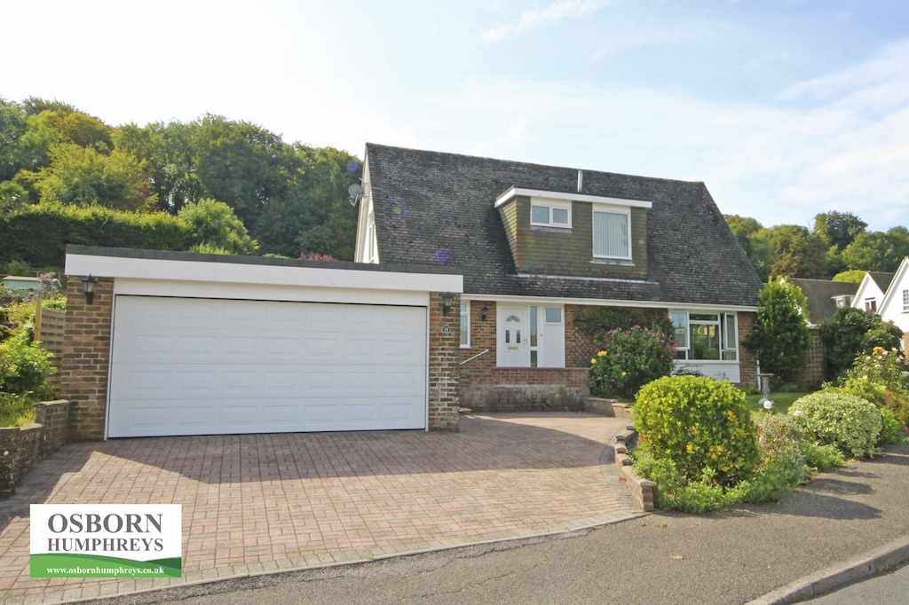

We had been talking about downsizing for some time, but only talking. We agreed that before it becomes too difficult we should find a smaller house with a smaller garden that was closer to local amenities. I had been looking casually for a small building plot so that we could build (or have built) a house to our own taste. What that is might have been debatable, but it would be something with a low environmental footprint. For example, screw piles rather than concrete footings, timber rather than brick/block, triple-glazed windows and lots of insulation. Power would be ground source heating and/or photovoltaic panels.
However, finding such a plot proved difficult!
Then, in September 2018 a friend of Angela's phoned to say that a small house near them, with a large garage, was about to come on the market and she thought it might be the sort of thing we were after. So we decided to take a look. Although it ticked most of the boxes (smaller, small garden, nearer the heart of Steyning and in quite good condition, if somewhat dated) it was a 1970's house on a large development, neither of which I really wanted.
So we arranged to view it, even though we hadn't looked at any other houses. After a second viewing we made an offer and put our house on the market! We couldn't quite believe what we'd done. Just the thought of moving, let alone to a significantly smaller house, was quite a daunting prospect.
That was early September, but it was the end of April before we actually moved. It took so long because our first buyer could not in the end raise the finance. During the process we got a structural survey of the extension and made that available to a new buyer.